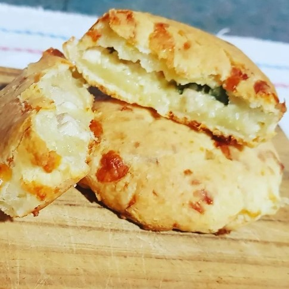

Chipá relleno
Ingredientes
Para 12 unidades
- 500 gr. de pechuga de pollo
- 80 gr. de harina común (o fécula de maíz)
- 500 ml. de leche
- 2 cebollas de verdeo
- 500 gr. de fécula de mandioca
- 100 ml. de aceite
- 2 huevos
- 250 gr. de queso pategrás
- Mostaza a gusto
- Sal y pimienta a gusto
Preparación
Comenzar por el relleno para que se enfríe. En una sartén o wok sofreir la pechuga de pollo cortada en cubos y la parte blanca del verdeo. Agregar la sal. Una vez dorado el pollo incorporar la harina o fécula de maíz, la leche y la mostaza. Revolver hasta espesar y condimentar a gusto. Para la masa colocar en un recipiente la fécula de mandioca, los huevos, la leche y el aceite. Mezclar hasta que se forme una masa lisa. Agregar el queso pategrás rallado grueso y terminar de unir. Dejar descansar por 15 minutos. Separar la masa en 12 bollos, estirar con la mano y agregar una cucharada sopera del relleno. Trabajar con las manos hasta cerrar el bollo nuevamente. Cocinar en horno fuerte (200°C- 220°C) entre 25 y 30 minutos.
Burritos de carne picante
Ingredientes
Para 12 unidades
- 1,250kg. de carne picada
- 250 gr. de zanahoria
- 250 gr. de tomate
- 400 gr. de cebolla, cualquier tipo
- 250 gr de queso cremoso
- 200 gr. de harina común
- 200 gr. de harina leudante
- 1 cucharada de aceite de oliva
- Sal, pimienta y tomillo a gusto
- Cantidad necesaria de agua
- Opcional: salsa tabasco
Preparación
En un bol agregar los dos tipos de harina, el aceite de oliva y una pizca de sal. Integrar todo hasta formar una masa lisa, agregando agua si es necesario. Dejar descansar por 20 minutos. Mientras tanto, sofreir en un wok la zanahoria, el tomate, las cebollas, todas cortadas en cubos pequeños. Agregar la carne picada y condimentar. Cocinar hasta que la carne esté bien hecha. Pasar a un bol y dejar enfriar. Separar la masa en bollitos de 50 gr. aproximadamente. Estirar con palo de amasar y darle forma redonda. Cocinar en una sarten a fuego moderado de 2 a 3 minutos por lado. Sacar y dejar tapadas con un repasador para que no pierdan humedad. Para el armado debe estar todo frío. Se coloca el relleno, la salsa tabasco y un trozo de queso mantecoso y se cierran. Si se desea se pueden calentar por 20 minutos en horno fuerte.